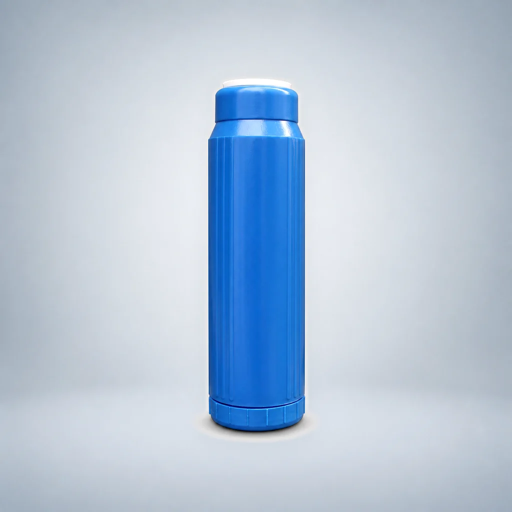
Lõi lọc ức chế đóng cặn FOF 10-Inch đầu phẳng
- Dạng sản phẩm
- Lõi lọc chứa vật liệu chuyên dụng
- Vật liệu lọc
- Vật liệu ức chế đóng cặn
Sử dụng hướng dẫn này để so sánh các lõi lọc sử dụng vật liệu chuyên dụng theo cấu trúc và thành phần vật liệu được cung cấp. Vật liệu tạo khoáng, cấu hình ức chế cáu cặn FOF và lõi lọc nhựa trao đổi cation được trình bày như các lựa chọn tìm nguồn cung riêng biệt, không kèm theo những tuyên bố thiếu căn cứ về sức khỏe hoặc hiệu quả xử lý.
So sánh các model được liệt kê và mở trang chi tiết. Các bản ghi model được tính riêng với các kích thước có thể tùy chỉnh; mức độ phù hợp phải được xác nhận cho dự án của bạn.

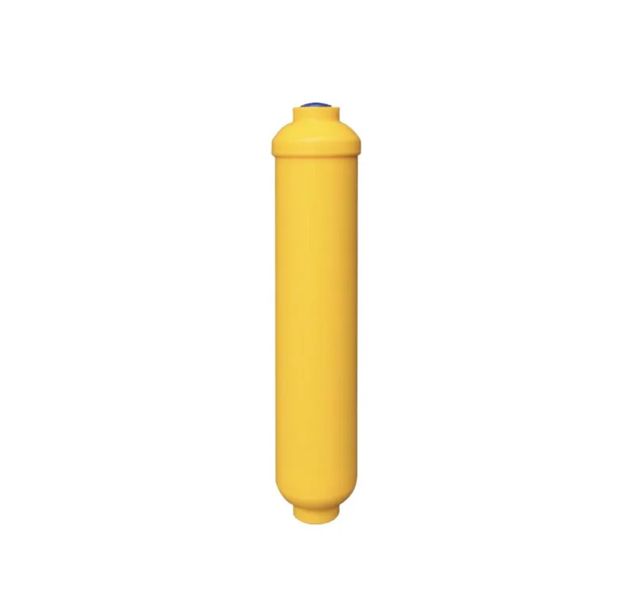
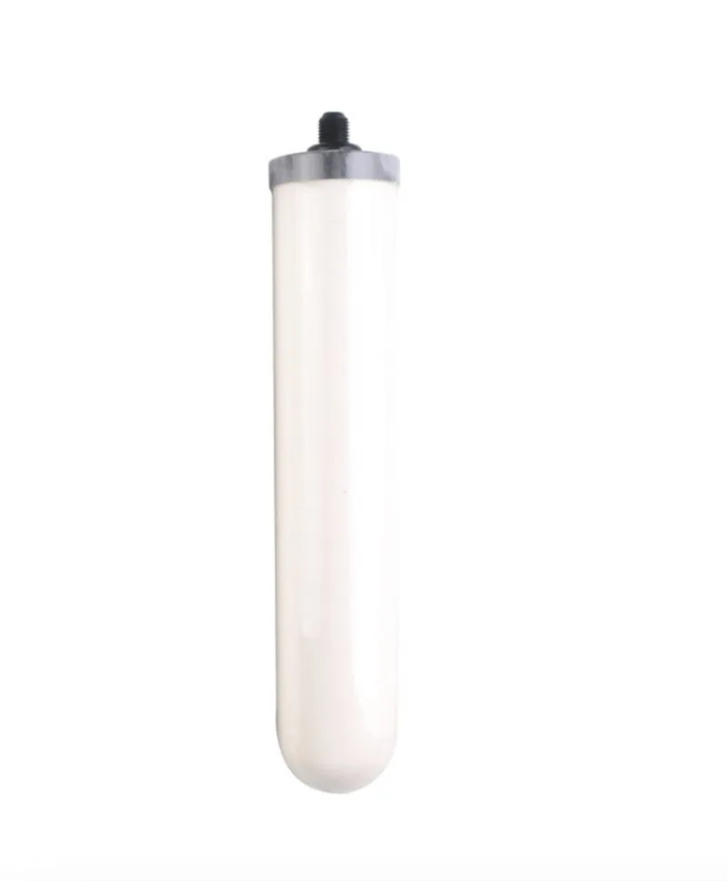
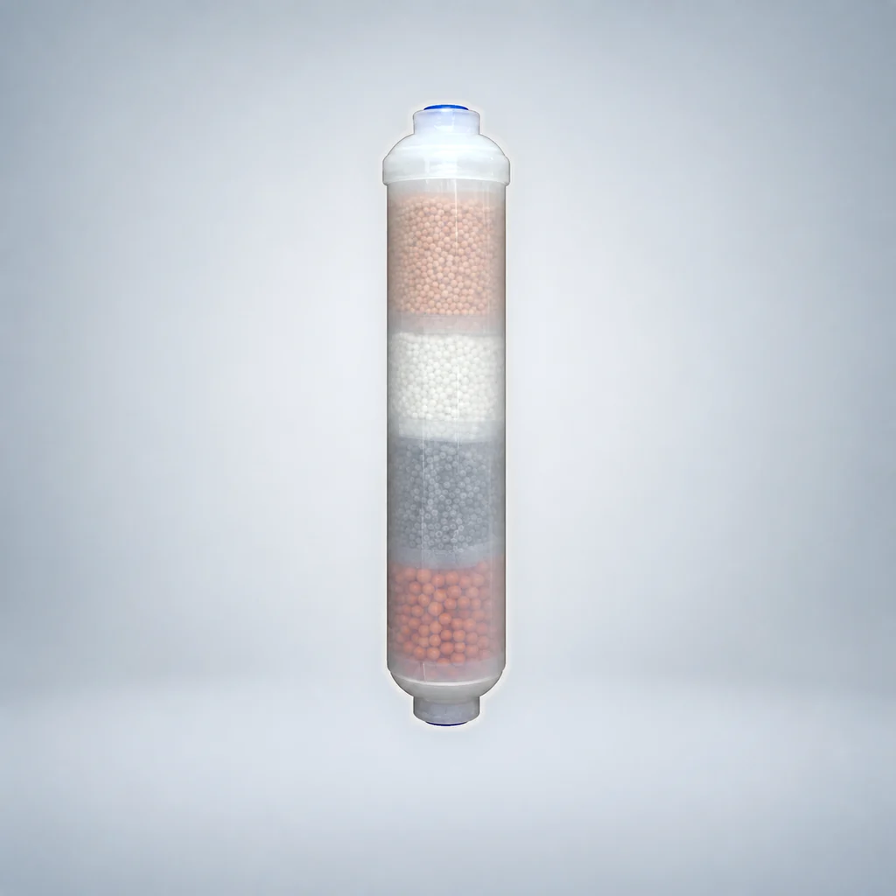
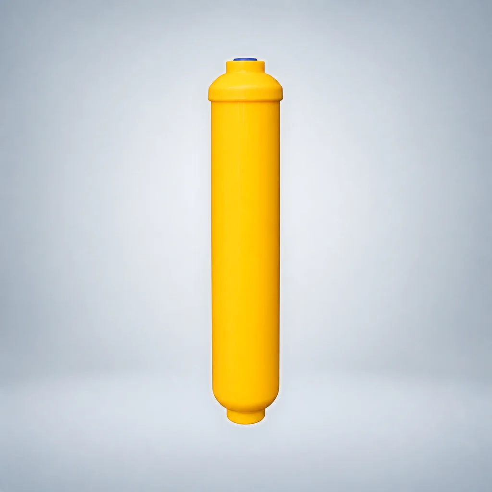
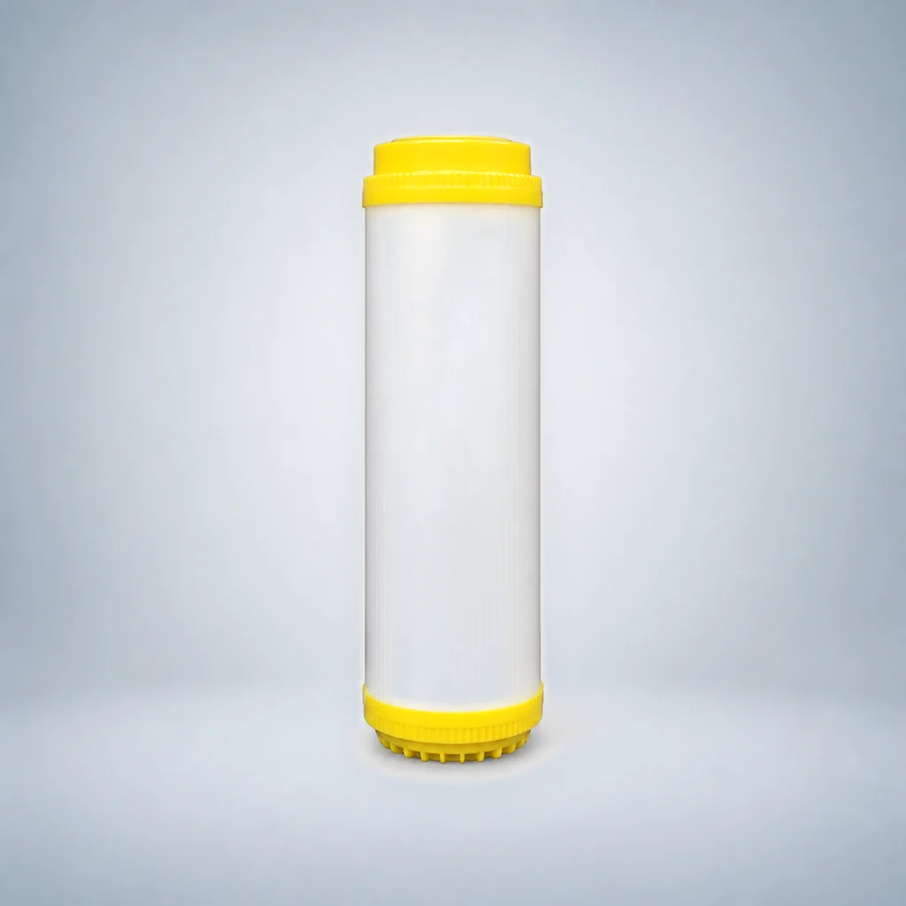
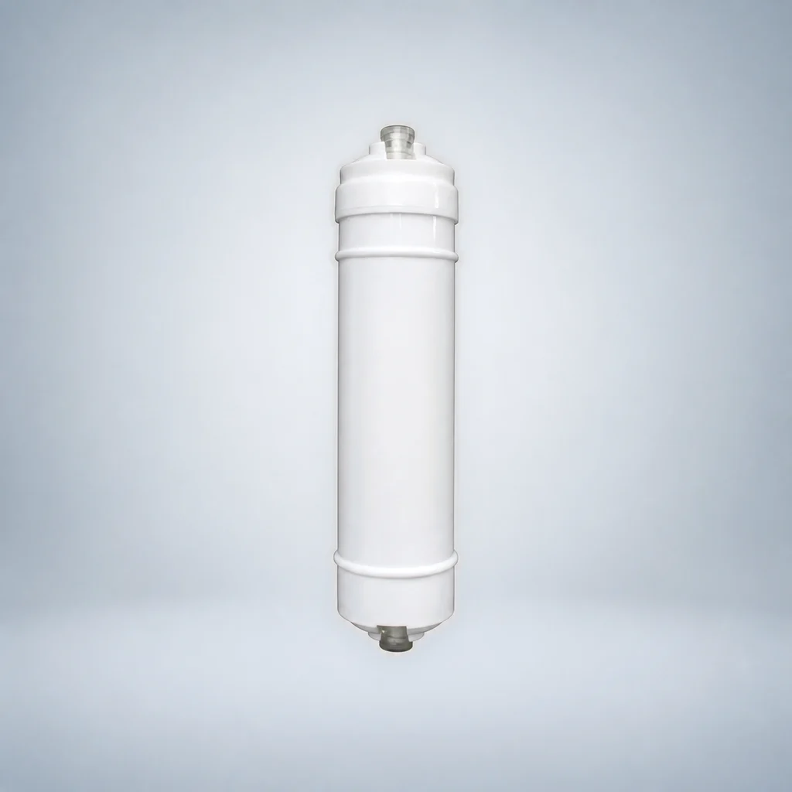
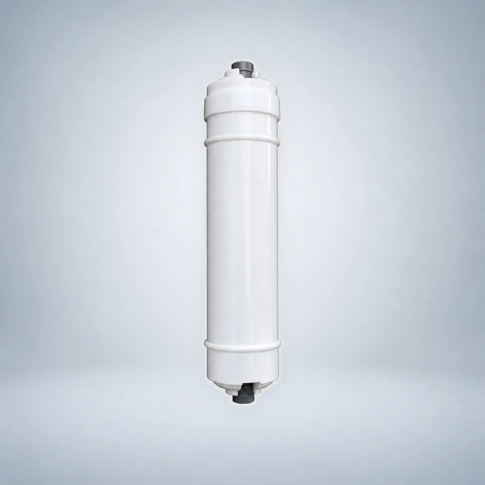
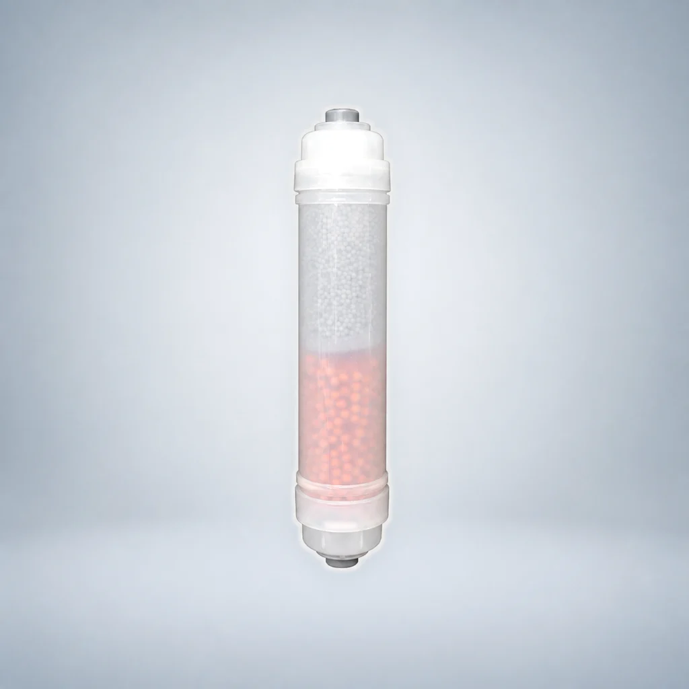
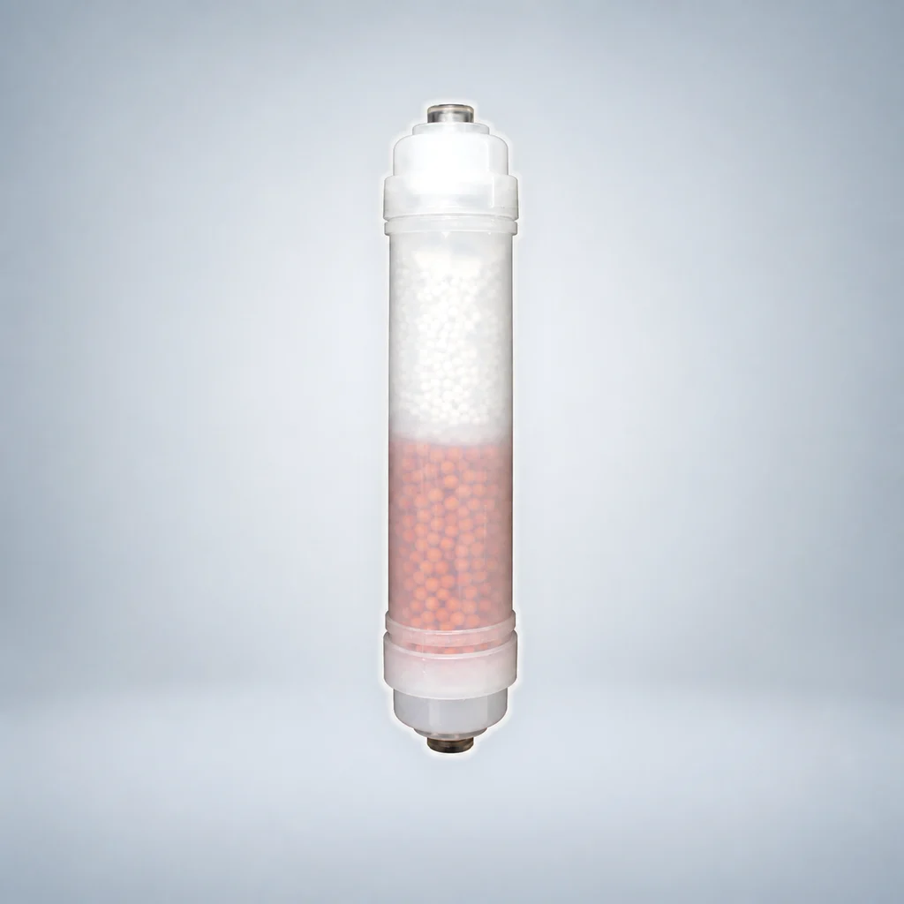
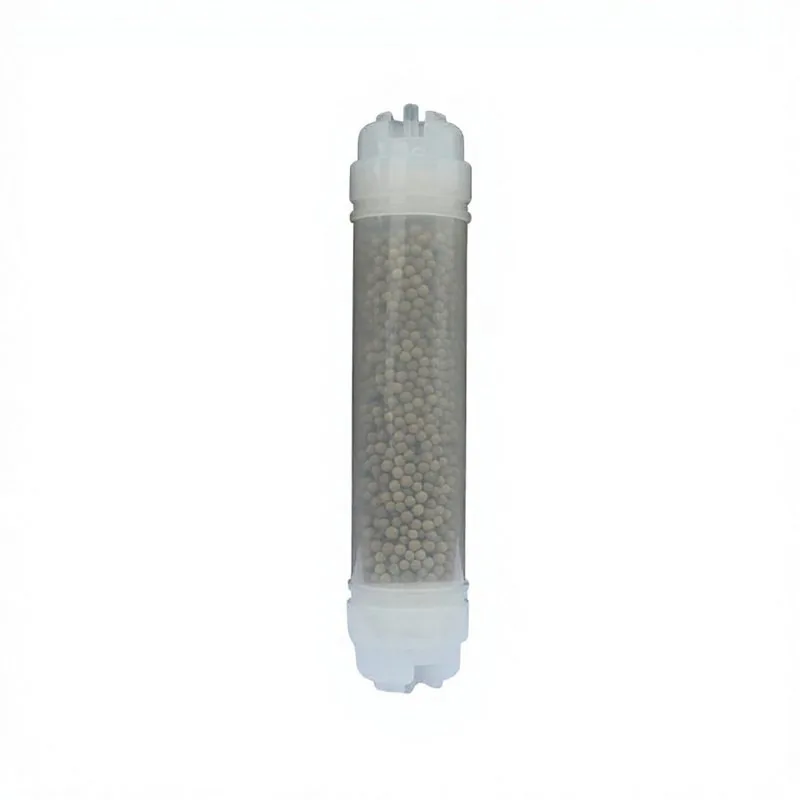
Chọn các yêu cầu mà bạn đã biết. Cấu hình có thông số kỹ thuật chưa được nêu trong nguồn sẽ được đánh dấu là cần xác nhận thay vì được coi là khớp chính xác.
Chọn tối đa ba cấu hình. Bạn có thể sao chép bản tóm tắt yêu cầu báo giá (RFQ) có cấu trúc hoặc chuyển đến biểu mẫu yêu cầu với các mã định danh đã được xác minh và tiêu chí lọc được điền sẵn.
Phạm vi: Công cụ này thu hẹp danh sách cấu hình OEM đã được rà soát. Kiểu đấu nối cuối cùng, tính tương thích, kích thước và yêu cầu của dự án vẫn phải được xác nhận trước khi báo giá.